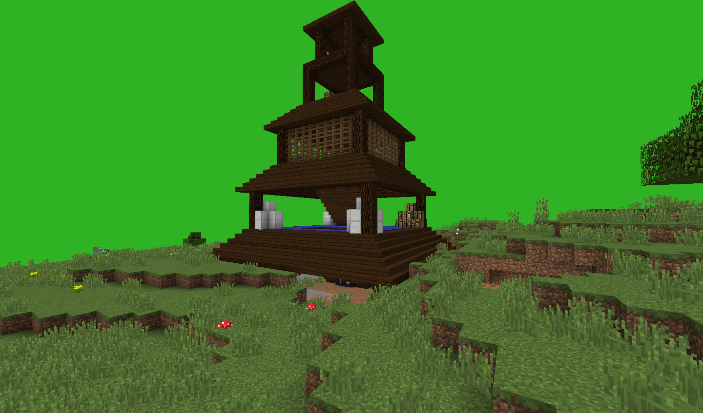

The house of robbers. The house contains a pen for cows and sheep, as well as the house itself, where robbers and other monsters live. There are quite a lot of hiding places in the house, so it is quite difficult to find all the awards in it. This is the rarest structure in the entire mod, and it is also found only in the dungeon world. If you find a dungeon, you definitely won't need the resources for quite some time. Also, this structure is considered one of the most dangerous, so it is undesirable to go there without good equipment.
